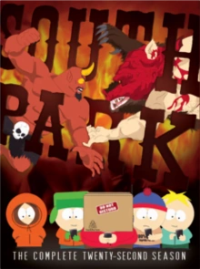

TEMPORADAS
Temporada 0
- 1. El Espíritu de la Navidad: Jesús vs Frosty
- 2. El Espíritu de la Navidad: Jesús vs Santa
- 3 .El Piloto No Salido al Aire
Temporada 1
- 1. Cartman Consigue Una Sonda Anal
- 2. Aumento De Peso 4000
- 3. Volcán
- 4. El Gran Crucero Del Gran Gay Al
- 5. Un Elefante Hace El Amor Con Una Cerda
- 6. Muerte
- 7. Conjuntivitis
- 8. Paco El Flaco
- 9. El Señor Mojón, La Mierda Navideña
- 10. Damien
- 11. Cirugía Plástica De Tom
- 12. Mecha-Streisand
- 13. La Mama De Cartman Es Una Puta Sucia
Temporada 2
- 1. Terrance y Philip: No Sin Mi Ano
- 2. La Mama De Cartman Sigue Siendo Una Puta Sucia
- 3. El Gallinófilo
- 4. El Pipi De Ike
- 5. La Señora Unida A Un Feto
- 6. La Rana Mexicana De Mirada Fija Del Sur De Sri Lanka
- 7. La Ciudad En El Borde De Para Siempre
- 8. Verano De Mierda
- 9. Las Bolas De Chocolate Saladas De Chef
- 10. Varicela
- 11. Rogert Elbert Deberia Dejar La Comida Chatarra
- 12. Casa Club
- 13. El Día De las Vacas
- 14. Ayuden A Chef
- 15. El Pez Espeluznante
- 16. ¡Feliz Navidad Charlie Manson!
- 17. Gnomos
- 18. El Hombre Prehistorico De Hielo
Temporada 3
- 1. Mariposeando Con Los Niños
- 2. Combustión Espontánea
- 3. El Súcubo
- 4. Tweek Vs Craig
- 5. Jakovasaurios
- 6. El Panda Del Acoso Sexual
- 7. Orgía De Gatos
- 8. Dos Hombres Desnudos En Un Jacuzzi
- 9. Jubileo
- 10. Chinpokomon
- 11. Paco El Flaco En El Espacio
- 12. El Misterio De Los Fantasmas Piratas De Korn
- 13. Conectado Al Mono De Fonética
- 14. La Medalla Roja de los Gays
- 15. Clásicos De Navidad Del Sr. Mojón
- 16. ¿Estás Ahí Dios? Soy Yo, Jesús
- 17. Concierto Mundial De Flauta Dulce
Temporada 4
- 1. El Hada De Los Dientes 2000
- 2. El Tonto Crimen De Odio Contra Cartman 2000
- 3. Timmy 2000
- 4. Las Quintuples 2000
- 5. Cartman Se Une A NAMBLA
- 6. Chef Se Vuelve Loco
- 7. Tampones De Cabello Cherokee
- 8. Algo Que Puedes Hacer Con Tu Dedo
- 9. ¿Van Los Invalidos Al Infierno?
- 10. Probablemente
- 11. Cuarto Grado
- 12. El Cuaderno Atrapador
- 13. ¡Hellen Keller! El Musical
- 14. Pip: Grandes Esperanzas
- 15. Campamento De Gordos
- 16. La Loca Aventura De Masturbacion
- 17. Una Navidad De Mierda
Temporada 5
- 1. Golpea al Aficionado
- 2. Pelea De Inválidos
- 3. Los Súper Mejores Amigos
- 4. Scott Tenorman Debe Morir
- 5. Terrance Y Philip: Detrás Del Pedo
- 6. Cartmanlandia
- 7. Uso Apropiado Del Condón
- 8. Toallín
- 9. Osama Bin Laden Tiene Los Pantalones Cagados
- 10. Cómo Comer Con Tu Culo
- 11. La Entidad
- 12. Aquí Viene El Vecindario
- 13. Kenny Muere
- 14. El Show De Butters
Temporada 6
- 1. Jared Tiene Sida
- 2. Asspen, Culorado
- 3. Huelga De Freaks
- 4. Diversión Con Ternera
- 5. El Avance De La Pelicula De Terrance Y Phillip
- 6. El Profesor Caos
- 7. Los Simpsons Ya Lo Han Hecho
- 8. Amor Católico Candente
- 9. Liberen A Sombrero
- 10. Las Tetas De Bebe Destruyen La Sociedad
- 11. El Secuestro Infantil No Tiene Gracia
- 12. Una Escalera Al Cielo
- 13. El Regreso Del Señor A Las Dos Torres
- 14. El Campamento De La Tolerancia
- 15. La Mierda Mas Grande Del Universo
- 16. Mi Futuro Y Yo
- 17. Abajo El Trineo Rojo
Temporada 7
- 1. Cancelado
- 2. Los Inválidos Locos
- 3. Papel De Baño
- 4. Soy Un Poco Rural
- 5. Culo Gordo Y Cabeza De Panqueque
- 6. Los Pequeños Detectives
- 7. La Codicia Del Hombre De Piel Roja
- 8. ¡South Park Es Gay!
- 9. Hard Rock Cristiano
- 10. Amanecer Gris
- 11. Casa Bonita
- 12. ¿Todo Sobre Los Mormones?
- 13. Sin Colillas
- 14. Pasitas
- 15. Es Navidad En Canadá
Temporada 8
- 1. Cancelado
- 2. Los Inválidos Locos
- 3. Papel De Baño
- 4. Soy Un Poco Rural
- 5. Culo Gordo Y Cabeza De Panqueque
- 6. Los Pequeños Detectives
- 7. La Codicia Del Hombre De Piel Roja
- 8. ¡South Park Es Gay!
- 9. Hard Rock Cristiano
- 10. Amanecer Gris
- 11. Casa Bonita
- 12. ¿Todo Sobre Los Mormones?
- 13. Sin Colillas
- 14. Pasitas
- 15. Es Navidad En Canadá
Temporada 9
- 1. La Nueva Vagina Del Señor Garrison
- 2. Muere Hippie, Muere
- 3. Wing
- 4. Mejores Amigos Para Siempre
- 5. La Aburrida Liga De Béisbol
- 6. La Muerte De Eric Cartman
- 7. Día De Erección
- 8. Dos Días Antes De Pasado Mañana
- 9. Margary
- 10. ¡Sigue Ese Huevo!
- 11. Niños Colorados
- 12. Atrapados En El Closet
- 13. Liberen a Willzyx
- 14. Maria Sangrante
Temporada 10
- 1. El Regreso del Chef
- 2. ¡Alerta Smug!
- 3. La Guerra de Los Dibujos Animados (Parte 1)
- 4. La Guerra De Los Dibujos Animados (Parte 2)
- 5. Toallín, Un Millón De Fibritas
- 6. Hombre-Oso-Cerdo
- 7. Tsst
- 8. Haz El Amor, No El Warcraft
- 9. El Misterio Del Mojón En El Urinal
- 10. Una Maestra Tiene Sexo Con Un Niño
- 11. Infierno En La Tierra 2006
- 12. Vamos Dios, Vamos
- 13. Vamos Dios, Vamos (Parte 2)
- 14. La Copa Stanley
Temporada 11
- 1. Con Disculpas a Jesse Jackson
- 2. Cartman Apesta
- 3. Piojos
- 4. El Snuke
- 5. El Fantástico Especial de Pascuas
- 6. ¡Les-Bos!
- 7. La Noche de Los Desamparados Vivientes
- 8. El Pequeño Tourette
- 9. Más Mierda
- 10. Imaginaciónlandia (Parte 1)
- 11. Imaginaciónlandia (Parte 2)
- 12. Imaginaciónlandia (Parte 3)
- 13. Héroes de La Guitarra
- 14. La Lista
Temporada 12
- 1. Problema De Amígdalas
- 2. El Nuevo Look De Britney Spears
- 3. El Gran Tetaje
- 4. Canadá En Huelga
- 5. ¡Puaj, Un Pene!
- 6. Sobre Cargado
- 7. Súper Diversión
- 8. El Problema Chino
- 9. El Show Sobre El Cáncer De Seno
- 10. Perudemia
- 11. Perudemia 2: El Susto
- 12. Sobre La Última Noche...
- 13. Musical De Primaria
- 14. El Incastigable
Temporada 13
- 1. El Anillo
- 2. El Mapache
- 3. Villa Margarita
- 4. Come, Reza y Tírate Vagipedos
- 5. Varitas de Pescado
- 6. Carrera de Autos de Madera
- 7. Barbagorda
- 8. Celebridades Muertas
- 9. La Perra Mayor De Butters
- 10. FCL: El Club De Luchas
- 11. ¡Jódete, Ballena!
- 12. La Palabra con M
- 13. Baila Con Los Pitufos
- 14. Pis
Temporada 14
- 1. Curación Sexual
- 2. La Historia de Escroto McBolas de Moco
- 3. Pollo Frito Medicinal
- 4. Tienes 0 Amigos En Facebook
- 5. 200
- 6. 201
- 7. Verano Minusválido
- 8. Pobre y Estúpido
- 9. Es Cosa De Jersey
- 10. El Origen
- 11. El Mapache 2: Retrospectiva
- 12. Mysterion Se Subleva
- 13. El Mapache Vs El Mapache Y Sus Amigos
- 14. Crema Freiche
Temporada 15
- 1. CentiPad Humano
- 2. Chistobot
- 3. Budín Real
- 4. T.A.P
- 5. Asociación Atlética de Bebés Crack
- 6. City Sushi
- 7. Estás Envejeciendo
- 8. Ano Berger
- 9. El Último de Los Mehicanos
- 10. Lenguado (Indiscretos)
- 11. Broadway Abajo
- 12. 1%
- 13. El Día de Acción de Gracias de History Channel
- 14. El Niño Pobre
Temporada 16
- 1. Mujeres Arriba
- 2. Compramos Oro
- 3. Faithileo
- 4. Judacabra
- 5. Bolas de Mantequilla
- 6. Nunca Debí Haber Ido A Hacer Tirolesa
- 7. Cartman Encuentra El Amor
- 8. Sarcásmobol
- 9. Subiendo Los Niveles
- 10. Inseguridad
- 11. Volviéndose Nativo
- 12. Una Pesadilla En iPad
- 13. Una Scausa Que Aplaudir
- 14. ¡Obama Gana!
Temporada 17
- 1. Let Go, Let Gov
- 2. Documental Homicidios Porno
- 3. Guerra Mundial Zimmerman
- 4. Niños Góticos 3: El Amanecer de los Falsos
- 5. Rompiendo Chochas
- 6. Vaca Pelirroja
- 7. Viernes Negro
- 8. Una Canción de Culo y Fuego
- 9. Tetas y Dragones
- 10. El Hobbit
Temporada 18
- 1. Jódete
- 2. Ébola Libre de Gluten
- 3. El Mariquita
- 4. Handicar
- 5. La Selva Mágica
- 6. Freemium no es Gratis
- 7. Vacasagrabucle Castigado
- 8. Magia de Pollas
- 9. #REFRITO
- 10. #FelicesHologramas
Temporada 19
- 1. Imponente y Valiente
- 2. ¿Dónde está mi País?
- 3. El Pueblo Dentro de la Ciudad
- 4. No Eres Yelp
- 5. Espacio Seguro
- 6. Tweek x Craig
- 7. Ninjas Malcriados
- 8. Contenido Patrocinado
- 9. Verdad y Propaganda
- 10. La Justicia Final del Director PC
Temporada 20
- 1. Bayas de Recuerdos
- 2. Caza Putas
- 3. Los Condenados
- 4. Pitos Fuera
- 5. Basura y un Danés
- 6. Fort Collins
- 7. Oh, Jesús
- 8. Sólo Miembros
- 9. No Es Gracioso
- 10. El Fin De La Serialización Tal Como La Conocemos
Temporada 21
- 1. Gente Blanca Renovando Casas
- 2. Bájalo
- 3. Especial de Feriado
- 4. Precuela de la Franquicia
- 5. Hummels & Heroína
- 6. Hijos de Brujas
- 7. Doble Fracaso
- 8. Tardígrados Danzarines
- 9. Dirección SÚPER DURA
- 10. Tomate Explosivo
Temporada 22
- 1. Niños Muertos
- 2. Un Niño y Un Sacerdote
- 3. El Problema con un Mojón
- 4. Granjas Tegridad
- 5. Los Monopatines
- 6. Tiempo Para Tomarlo En Cereal
- 7. ¿Nadie Lo Toma En Cereal?
- 8. Caja de Buda
- 9. Insatisfecho
- 10. Desfile de Bicicletas

Temporada 23
- 1. Guasón Mexicano
- 2. Banda en China
- 3. Vacunas
- 4. Que Coman Mejunjes
- 5. Especial de Halloween de Granjas Tegridad
- 6. Temporada Final
- 7. Jugadoras de Mesa
- 8. Ladrones de Mojones
- 9. El Show de Scott Malkinson
- 10. Nieve Navideña
Temporada 24
- 1. Especial de Pandemia
- 2. Especial de Vacunación South ParQ

Temporada 25
- 1. Día de la Pijama
- 2. La Gran Redención
- 3. Gente de Ciudad
- 4. Volver A La Guerra Fria
- 5. ¡Ayuda! ¡Mi adolescente me odia!
- 6. Credigree Weed Especial el Día de San Patricio

Temporada 26
- 1. Cupido Ye
- 2. Tour Mundial De Privacidad
- 3. Baño Japonés
- 4. Aprendizaje Profundo
- 5. DikinBaus Perros Calientes
- 6. Vacaciones de Primavera